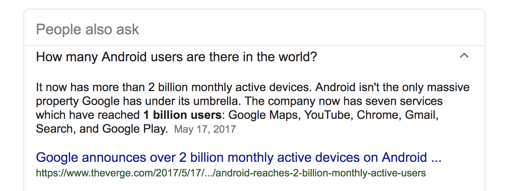
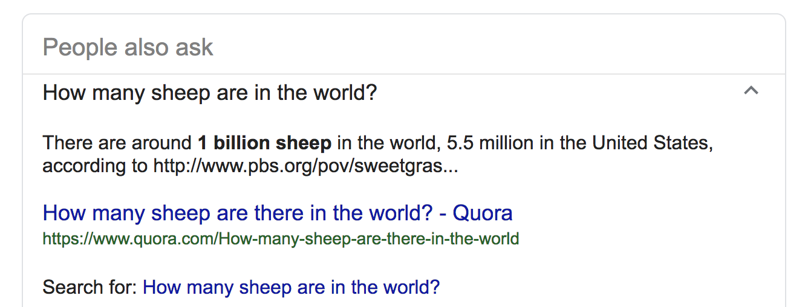

time travel
with redux and friends
the problems
- slow development process
- dealing with side effects
- supporting devices we dont have
- tunnels, elevators, and villages
slow development
- lots of recompiling
- lots of repetition to setup state
dealing with side effects
- some users never kill your app
- your app will be killed at every point in its lifecycle
- we have to classify state by volatility
there are more android devices than sheep


supporting devices we dont have
- someone's running a homemade potato
- flagship devices become microwaves over time
- your app will crash
tunnels, elevators, and villages
- great connectivity
- uncapped LTE/fiber
there a many more possible problems
but thats for another day
today's problems
- frontend development can be slow and frustrating
- uncontrolled side effects might be around forever (or not long enough)
- your app will be killed at random times
- microwaves run android
- we have to consider network loss/failure
actual microwave running android
the tools
- redux
- redux-offline
- redux-saga
redux
- single object for your entire application state
- state is mutated only by predefined actions
- one action maps to one predefined mutation
redux
redux-offline part 1
- redux state is serializable
- we can store it, and load it again
- potentially on a difference device
- send it on the line to developers
- reproduce issues by loading the state the customer was in
redux-offline part 2
- optimistic UI, think instagram double tap
- users are impatient
- either commit, or rollback
- request queue, retries across restarts
redux-saga
- controlled side effects
- listen for redux actions
- create more redux actions